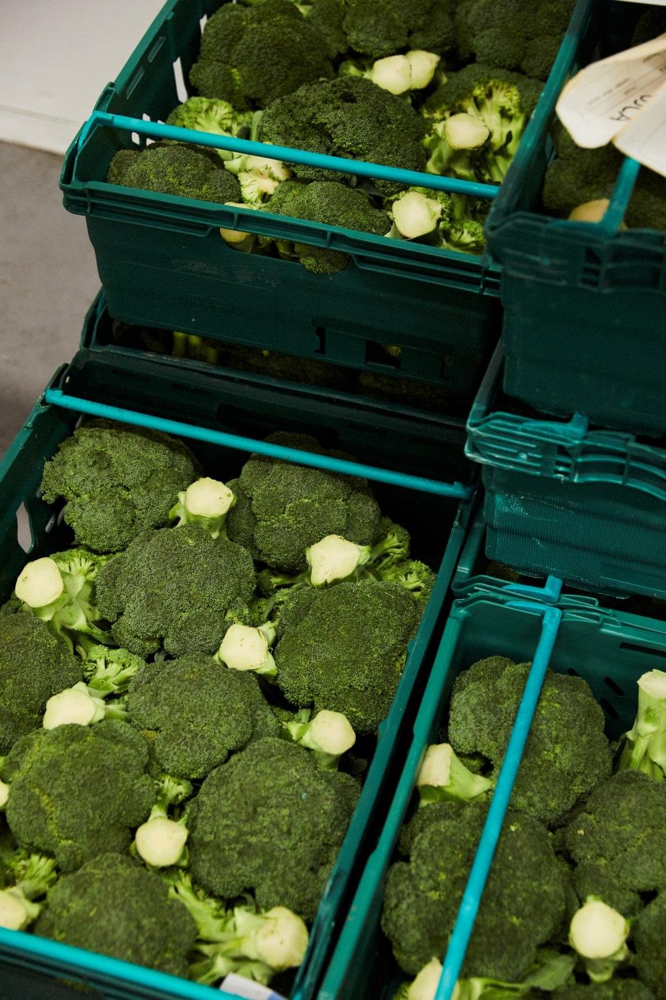
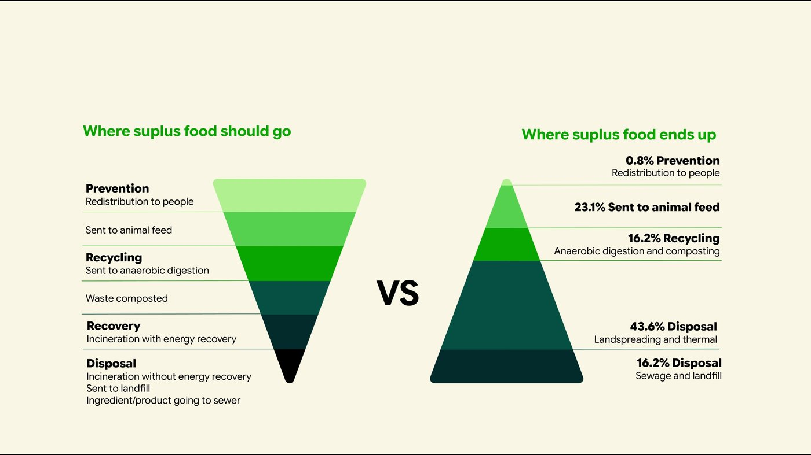
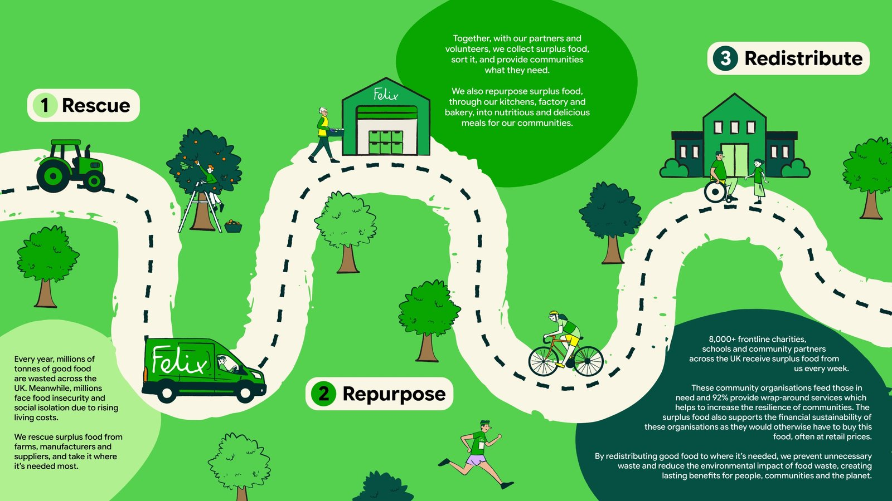
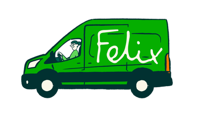
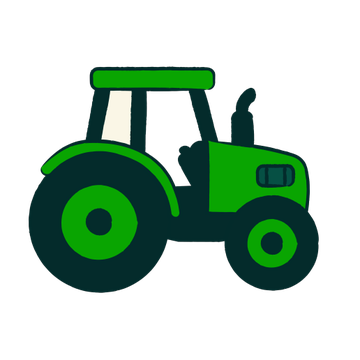
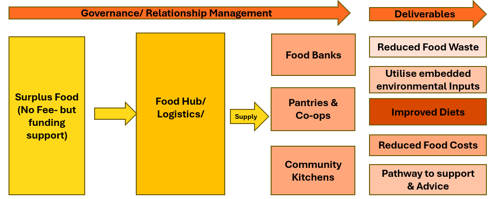
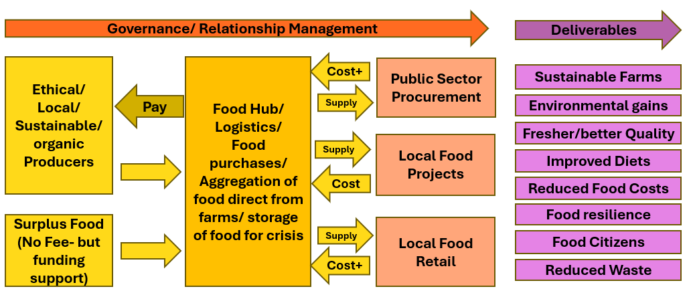
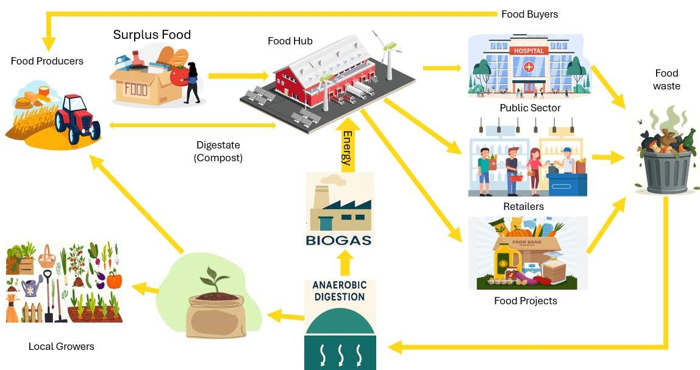

Treating community food as infrastructure, not emergency response.
The Felix Project's own case for why the food aid system needs real, funded infrastructure: shared storage, logistics and purchasing power, not just more goodwill stretched further. It sits directly behind the hub thinking already running through this portfolio's Hubs & Markets Working Group.

Why Felix is making this case now
The climate emergency, unsustainable farming practices, supermarket dominance and growing health impacts all show the same thing: the food system isn't fit for purpose. Six pressures, all live at once.
Rising food prices
- Unaffordability and inaccessibility
- Rising food bank usage
- Cheaper, less nutritious food chosen instead
- Independent grocers increasingly unsustainable
Environmental
- Greenhouse gas emissions, soil and water damage
- Intensive farming reduces biodiversity
- Horticulture is key but not incentivised
- 40% of the UK's most productive farmland grows food for animals, not people
Poor diet and health
- High consumption of ultra-processed food, low fruit and veg intake
- A clear link between health and poverty
- An estimated £298bn a year cost of poor diet
Food waste
- Millions of tonnes wasted yearly, at farms, supermarkets and in homes
- Enough edible food wasted on UK farms alone to feed everyone in poverty
- Wasted food is wasted resources, not just wasted meals
Pressure on farmers
- Rising fuel and fertiliser costs
- Supermarket contracts extract value and create risk
- Labour shortages, Brexit and climate change together
- 49% of UK farms considered under threat
Food imports
- The UK imports a large share of its food; global disruption affects supply directly
- Import and input dependence is itself a risk
- The Joint Intelligence Committee and Defra warn of a strategic risk of catastrophic UK food system failure by 2030
The food waste challenge
The waste hierarchy is clear: prevention and redistribution to people should come first, recycling and recovery after. In practice, it runs almost backwards.

How Felix's own model works today
Felix rescues surplus food from farms, manufacturers and suppliers; repurposes some of it through its own kitchens, factory and bakery; and redistributes the rest, alongside meals made from it, to more than 8,000 frontline charities, schools and community partners across the UK every week.

Infrastructure for a resilient food system
Recent national and London-focused reports on the climate emergency, global instability, unsustainable farming and growing health risks all converge on the same conclusion: invest in community food infrastructure.
The food aid system, and the vision beyond it

The system today
- Food aid is solidarity and a community reaction to deprivation
- Reactivity tends to make food consumers rather than food citizens, though affordable food clubs and cooperatives are changing this
- Demand is growing while staff, volunteers and food are all stretched
- Addressing the causes of food poverty, not just the symptoms, is still patchy
- Funding challenges are perennial
- Food services build trust, community and financial resilience, but often lack the tools to measure their own impact
- Buying still happens in silos, organisation by organisation
The vision
- Move food services from being accessed by necessity to being accessed by choice
- Empower communities by shifting control of food growing, buying and distribution to them
- Treat community food assets as essential social infrastructure
- Strengthen local capacity for storage, transport, distribution and coordination
- Build shared, open tools: to plan and measure social return on investment, and blueprints for hubs and food systems that anyone can reuse
The wider cost of inaction
The food system internalises profit and externalises cost and risk. Food networks and health networks both want better outcomes for the same residents, but too often work in silos from each other.
What a food hub actually does
- Offers increased access to healthy, nutritious surplus food
- Lets partners offer cash-first advice, welfare support and specialist services alongside food
- Provides a welcoming space to share food and strengthen community connection
- Builds pathways away from emergency food aid, toward empowered food citizens
- Collective purchasing reduces costs and improves producer equity
- Shared storage, transport and operations increase efficiency
- Shorter supply chains improve resilience during disruption
- Regional networks help align food production to nutritional need

Farm sustainability: making the economics work
Farmers who want to farm well, or who have genuine surplus, often can't find a viable route to market, or find that the only available route extracts most of the value before it reaches them.
Food hubs solve this by aggregating output from many small producers into a single, larger offer that can meet institutional and retail demand. That gives small, sustainable farms access to markets, schools, hospitals, local retailers, that they couldn't reach alone, provides more stable and fairer prices by cutting out intermediary layers that currently capture most of the value, and creates the economic conditions for farmers to invest in soil health, biodiversity and lower-carbon practices, rather than being forced into volume-at-any-cost farming to survive.
From surplus-only to a closed loop
Felix's own diagrams set out three versions of a food hub, each adding a layer the last one didn't have. The London Hubs & Markets Working Group's own living diagrams, linked below, cover closely related ground.


